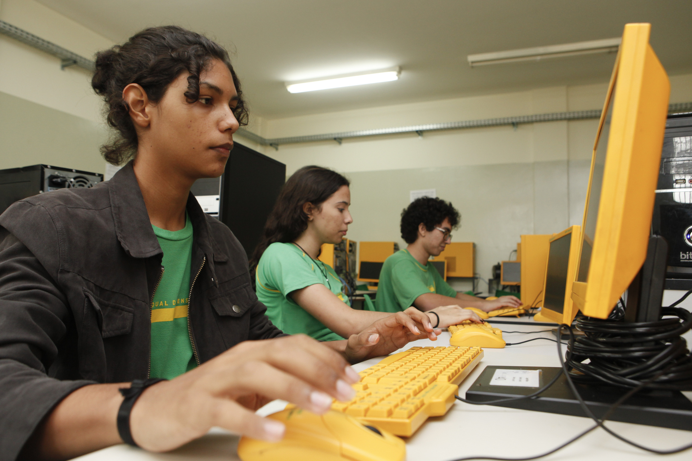

EEMIP Lolo Da Silva Pinto

O site de notícias da escola é uma plataforma digital desenvolvida para informar, engajar e conectar toda a comunidade escolar — incluindo alunos, professores, pais e funcionários — com as principais atualizações e acontecimentos da instituição. Com um design intuitivo e responsivo, o site é acessível a partir de qualquer dispositivo (computador, tablet ou celular), oferecendo uma navegação fácil e organizada. A página inicial exibe as manchetes mais recentes, com imagens ilustrativas e chamadas curtas que direcionam o visitante para as matérias completas.